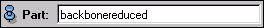
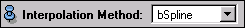
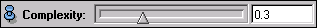
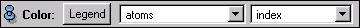
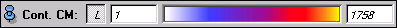
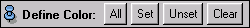
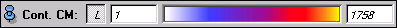
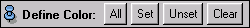
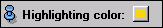

Ports
Part

This port lets you enter an atom expression. The atom expression will determine the set of atoms that will be connected. The default value is backbonereduced, which means that the tube will indicate the location of polypeptide and RNA/DNA backbone atoms.
To restrict the display to just a few atoms it is more convenient to use the filter that can be accessed with the Selection Browser. To include atoms in the sequence to be shown it must be active in the set defined by the atom-expression as well as the filter.
Interpolation Method

Complexity

Coloring





You will find the description of the four ports above in the section on visualization of molecules.
Highlighting

Highlighting Color

Tube sections that belong to atoms that have been highlighted with the Selection Browser will be shown in this color.